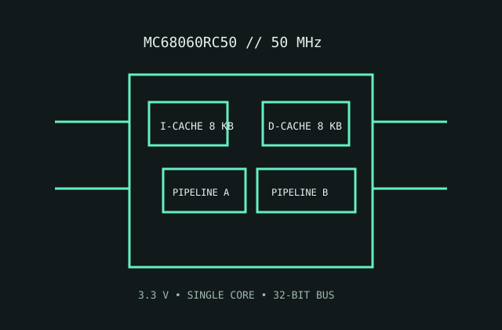

[ MOTOROLA 68000 FAMILY // SUPER-SCALAR GENERATION ]
Motorola MC68060RC50
The 50 MHz 68060 is a superscalar 68k CPU with separate instruction/data caches and integrated memory management; exact LC/EC variants are not interchangeable.

MODEL IDENTIFICATION: MC68060RC50 full-featured 50 MHz ceramic PGA variant. Check mask/revision and do not confuse it with 68LC060 or 68EC060.
Recorded specifications
| Model | MC68060RC50. |
|---|---|
| Generation | Final high-performance 68000 family generation, 1990s. |
| Architecture / cores | Motorola 68060 CISC ISA; one superscalar 32-bit core; integrated MMU and hardware floating-point support on the full MC68060. |
| Frequency / cache | 50 MHz speed grade; separate 8 KB instruction and 8 KB data caches. |
| Package / socket | RC ceramic PGA package; requires a 68060-compatible PGA board/socket and the exact pin assignment. |
| Power | 3.3 V nominal device supply. No universal TDP; power and thermal design must use MC68060RC50 maximum-current/dissipation limits and board-specific cooling. |
| Memory / bus | 32-bit external address and data interface with integrated MMU/cache; external memory controller and DRAM are board-level. |
| Board compatibility | Requires a board designed for 68060 bus protocol, 3.3 V power, clocking and PGA package. A 5 V 68040 socket is not automatically compatible; verify level translation and firmware support. |
Compatibility notes
- Distinguish full MC68060 from LC/EC versions by complete top marking and mask revision.
- Check board voltage conversion, bus timing, cache configuration, cooling and ROM/OS support before installation.
- Socket fit alone does not establish electrical or software compatibility.
Sources & further reading
- Motorola M68060 User's Manual hosted by NXPManufacturer-maintained legacy reference manual covering architecture, cache, bus and electrical limits. Original page is gone; this is the Internet Archive’s copy.
- Motorola M68060 User's Manual, Rev. 1 (Bitsavers archive)Archival copy of the manufacturer manual for model and board-level verification.